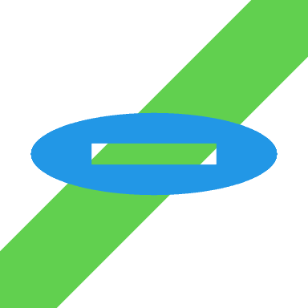
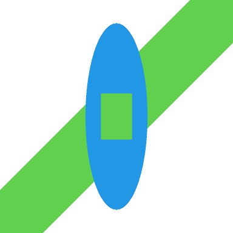

library("grid")UPDATE: (2023-05-18) The behaviour of compositing operators was modified in R version 4.3.0 (affecting the “clear” and “source” operators). The examples in this post have been updated so that they produce the same output (just using a different operator).
Support for gradient fills, pattern fills, clipping paths and masks was added to the R graphics engine in R version 4.1.0.
The development version of R (likely to become R version 4.2.0) contains support for several more graphical tools: groups, compositing operators, and affine transformations, plus some tweaks to paths and masks.
An R-level interface for these new features has been added to the ‘grid’ graphics package.
The following code demonstrates drawing a group with the new grid.group() function. The basic idea is that we can draw a group of shapes in isolation and then add the result to the main image. In this case, we draw a rectangle and a circle as an independent group before adding them to the image.
One of the advantages of drawing groups in isolation is that we can combine shapes using different compositing operators. In this case, we use a “dest.out” operator, which means that, rather than drawing the rectangle on top of the circle, the rectangle creates a hole in the circle.
A green line was drawn first to show that there is a hole in the circle, through which we can see the green line.
grid.segments(gp=gpar(col=3, lwd=50))
grid.group(rectGrob(width=.4, height=.2, gp=gpar(fill="black")),
"dest.out",
circleGrob(r=.4, gp=gpar(col=NA, fill=4)))The following code demonstrates the new path-drawing facilities, which includes the new function grid.fill() to fill a path. A path can be created from any number of shapes and then we can stroke or fill the path (or both). In this case, we describe a path based on a rectangle and a circle.
When a path consists of overlapping shapes, the “inside” of the path - the area that gets filled - can become complex. We can control the “rule” that is used to decide the filled area. In this case, we use the “even-odd” rule, which means that the area inside the rectangle is actually outside the path; the result again is a hole in the circle.
The path is filled with a blue colour (and no border).
grid.segments(gp=gpar(col=3, lwd=50))
path <- gTree(children=gList(circleGrob(r=.4),
rectGrob(width=.4, height=.2)))
grid.fill(path,
rule="evenodd",
gp=gpar(col=NA, fill=4))The following code demonstrates the new luminance mask support, which is available via the as.mask() function. The as.mask() function creates a mask from a grob and a type.
The type can be "luminance", which means that the luminance of the grob determines the semitransparency of the masked output. In this case, we define a mask based on a white circle with a black rectangle drawn on top.
When we push a viewport with a luminance mask, any subsequent drawing will be opaque where the mask is white and transparent where the mask is black (and semitransparent where the mask is grey). In this case, having pushed a viewport with the mask, we fill the entire image with blue and the result is a blue circle (because the circle in the mask is white) with a hole (because the rectangle in the mask is black).
pdf("luminance-mask.pdf", width=2, height=2)
grid.segments(gp=gpar(col=3, lwd=50))
mask <- gTree(children=gList(circleGrob(r=.4,
gp=gpar(col=NA, fill="white")),
rectGrob(width=.4, height=.2,
gp=gpar(col=NA, fill="black"))))
pushViewport(viewport(mask=as.mask(mask, "luminance")))
grid.rect(gp=gpar(fill=4))
dev.off()The remaining examples demonstrate affine transformations, using the grid.define() function and the grid.use() function. If we define a group (without drawing it) in one viewport and then use the group in a different viewport, the group is transformed based on differences in location, size, and rotation of the two viewports. In this case, we define a group based on a circle and a rectangle (using the “dest.out” operator so that the rectangle creates a hole in the circle), in a viewport that is the full size of the image, then we push a viewport that is only one-third the height of the image and use the group that we defined.
This produces a vertically squashed version of the group because the viewport we are using the group in is much shorter than the viewport that the group was defined in.
grob <- groupGrob(rectGrob(width=.4, height=.2, gp=gpar(fill="black")),
"dest.out",
circleGrob(r=.4, gp=gpar(col=NA, fill=4)))
grid.define(grob, name="donut")
grid.segments(gp=gpar(col=3, lwd=50))
pushViewport(viewport(height=1/3))
grid.use("donut")
popViewport()
The following code is similar, but this time we use the group in a viewport that is one-third the width of the image, so the group is horizontally squashed.
Another difference in this example is that the group is based on a path that is filled using the “even-odd” rule, which demonstrates that we can combine these new features of groups and paths.
grid.newpage()
grob <- fillGrob(path,
rule="evenodd",
gp=gpar(col=NA, fill=4))
grid.define(grob, name="donut")
grid.segments(gp=gpar(col=3, lwd=50))
pushViewport(viewport(width=1/3))
grid.use("donut")
popViewport()
The following code demonstrates that we can use a group multiple times. In this case, we use the group in two further viewports, both of which are still square, but smaller than the image and shifted to the left or right.
Another difference in this example is that the group is based on a rectangle that is drawn within a viewport that has a luminance mask applied; further evidence of our ability to employ the various graphical tools in combination with each other.
pdf("luminance-mask-squashed.pdf", width=2, height=2)
vp <- viewport(mask=as.mask(mask, "luminance"))
grob <- rectGrob(gp=gpar(fill=4), vp=vp)
grid.define(grob, name="donut")
grid.segments(gp=gpar(col=3, lwd=50))
pushViewport(viewport(x=.25, width=.5, height=.5))
grid.use("donut")
popViewport()
pushViewport(viewport(x=.75, width=.5, height=.5))
grid.use("donut")
popViewport()
dev.off()The new features have only been implemented on a subset of graphics devices so far: cairo_pdf(), cairo_ps(), x11(type="cairo"), png(type="cairo"), jpeg(type="cairo"), tiff(type="cairo"), svg(), quartz() (from R 4.3.0), and pdf(). Furthermore, most compositing operators only work on the Cairo devices or quartz(), Cairo devices only support alpha masks, and quartz() only supports luminance masks.
R packages that implement graphics devices will need to be updated and reinstalled for the new R version.
Further discussion and more detail about the new features and how they have been implemented can be found in a series of technical reports: one on groups, one on paths, and one on masks.